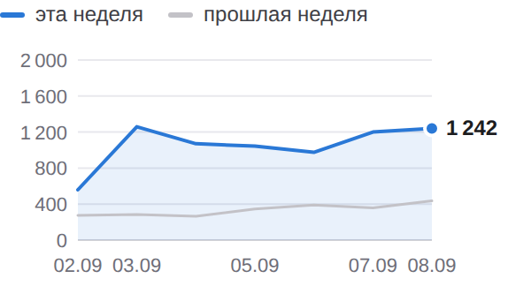
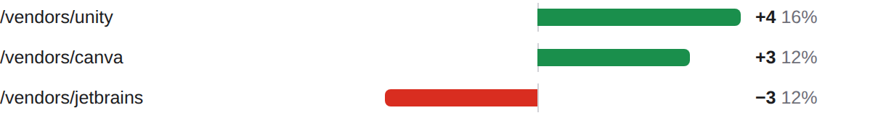
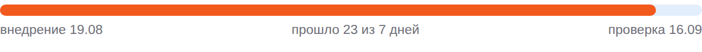

BIZSoft Growth Intelligence Daily Search, Demand & Experiment Control · 11.09.2026
Яндекс по 09.09 · Google по 08.09 · Метрика по 10.09 · спрос 06.09 | | ! | ПОИСК — смешанная | | | ✓ | ДАННЫЕ — сверено | | | ✓ | ТЕХНИКА — GREEN · 100 | | | · | ОТ ВАС — 2 предложения | |
| От вас: срочного нет, на вашем столе 2 предложения • эксперименты: ближайшее предложение решения — 13.09 (PAGES-EXP-001); варианты и вероятный исход — в «Контроле эксперимента» • рост без бюджета: 3 кластера с показами без переходов (google, adobe, suno) ждут переписанных сниппетов — «Где ближе всего рост» Развёрнутые постановки задач — в разделе «Управленческие воздействия» внизу письма; решения принимаете вы, система без команды ничего не меняет. |
| Показатели Видимость в Яндексе 7 347 показов за неделю ▲ +4996 +212,5%  По дням: эта неделя 7 347, прошлая 2 351. На первой странице 1459 из 1866 запросов выборки. CTR 1,03% по всему сайту. 02.09–08.09 · Яндекс.Вебмастер, весь сайт, дневные ряды · достоверность: достаточная |
Видимость в Google 110 показов за неделю ▲ +51 +86,4% Переходов из Google пока нет. 02.09–08.09 · Google Search Console, весь сайт, дневные ряды · достоверность: достаточная |
Органический трафик 31 визитов за неделю ▲ +17 Визиты из поиска: весь сайт, все поисковые системы. 04.09–10.09 · Яндекс.Метрика, весь сайт, дневные ряды · достоверность: достаточная |
Обращения 2 заявки за сутки Заявки воронки сайта: компания, состав запроса и канал каждой — в блоке «Заявки за сутки». 10.09 · воронка сайта (Directus) · достоверность: полный подсчёт, малые числа |
| Сигналы дня Показы в Google за неделю 59 → 110 (+51)Страницы сайта стали показываться чаще. достоверность: достаточная Страницы в поиске Яндекса 455 → 449 (−6)Часть страниц выпала из поиска Яндекса. достоверность: достаточная Запросы выборки на первой странице 1 313 → 1 459 (+146)Внутри выборки прибавилось запросов на первой странице. достоверность: достаточная | Заявки за сутки канал определяется по визитам Метрики (ym:s:clientID); при отсутствии визитов — по метке источника в браузере, и тогда выдача поисковика неотличима от его сервисов 2 заявки за сутки; за 7 дней по каналам: поиск Яндекса: 1, прямой заход: 1. 10:47 · АО "Кентек" без указанного состава · форма catalog Канал: прямой заход Путь: первый визит 10.09 — прямой заход, вход /; 3 визита до заявки; заявка после визита 10.09 — прямой заход основание: Метрика · визит 10.09 11:05 · ФАУ "Главгосэкспертиза России" Kling AI — подбор тарифа · форма vendor-kling-ai Канал: поиск Яндекса Путь: первый визит 10.09 — поиск Яндекса, вход /vendors/kling-ai; 1 визит до заявки основание: Метрика · визит 10.09 | Реклама — Яндекс.Директ расход в деньгах кабинета (без НДС); заявки — цели Метрики (отправка заявки, скачивание КП), контакты — клики по телефону/почте и мессенджер; с CRM не сверяется Кампания Директа, данные за 10.09: за день 926 ₽, за 7 дней 5025 из 4 098 ₽ недельного лимита, с запуска 9062 ₽ (14 дн.). Claude — 118 ₽, 7 кликов, CPC 17 ₽, заявок 0 · идёт набор статистики (825 из 3000 ₽ до порога) Claude Code — 0 ₽, 0 кликов, заявок 0 · идёт набор статистики (805 из 3000 ₽ до порога) Midjourney — 98 ₽, 4 клика, CPC 24 ₽, заявок 0, контактов 1 · заявок нет, контакты есть (1) — наблюдаем ChatGPT Business — 0 ₽, 0 кликов, заявок 0 · идёт набор статистики (1088 из 2500 ₽ до порога) Cursor — 42 ₽, 2 клика, CPC 21 ₽, заявок 0 · идёт набор статистики (697 из 3000 ₽ до порога) Adobe — 78 ₽, 4 клика, CPC 20 ₽, заявок 0 · 1718 ₽ без заявок и контактов — выше допустимой цены заявки 1500 ₽, кандидат на паузу, решение за вами Зарубежное ПО (общая) — 0 ₽, 0 кликов, заявок 0 · идёт набор статистики (452 из 2500 ₽ до порога) Atlassian — 0 ₽, 0 кликов, заявок 0 · мало данных (4 кл.) Box и Dropbox — 0 ₽, 0 кликов, заявок 0 · мало данных (1 кл.) Descript — 0 ₽, 0 кликов, заявок 0 · мало данных (2 кл.) Прочие группы (Apple Gift Card, Оплата подписок Apple из России, Подарочная карта Apple, Подарочные карты сотрудникам, Пополнить Apple ID и баланс App Store) — 591 ₽, 143 клика, CPC 4 ₽ · группа вне списка направлений — добавить в контроль Требует решения: замечены нерелевантные запросы (34 шт., 221 ₽) — наблюдаю, при росте предложу минусы | Что дало изменение Google. Изменение +19 по страницам. Прибавили: /vendors/unity, /vendors/canva. Потеряли: /vendors/jetbrains. накопленное окно 26 дней, сдвинуто на сутки +4 /vendors/unity 16% изменения +3 /vendors/canva 12% изменения · новая −3 /vendors/jetbrains 12% изменения  /vendors/unity +4; /vendors/canva +3; /vendors/jetbrains −3 Яндекс. Изменение +2341 по запросам. Прибавили: оплатить бокс. все 1862 запросов хоста, окно 2026-08-28–2026-09-09 +167 оплатить бокс 6% изменения | Контроль эксперимента SEO-EXP-001 · заголовки и блок вопросов на 5 карточках Проверяем: понятнее ли описание страницы в выдаче для того, кто покупает на компанию, и чаще ли по ней переходят Запуск 19.08 · день 23 · минимум для вывода 7 дн. и 263 показов (гейт снижен с 500: ёмкость окна кластера меньше) Внедрение: 5 из 5 страниц отдают новый вариант (проверка сайта 11.09). Выдача Яндекса: новый сниппет виден в выдаче у 4 из 5 страниц (замер 11.09), позиции 2–7 — Яндекс уже показывает новый вариант. Экспозиция: 65 показов из 100 минимальных (до порога ещё 35, порог адаптирован под ёмкость кластера) по совпадающим запросам окон; кластер целиком — 376 показов · 0 кликов · день 23 из 7 минимальных. Старый → новый: CTR 0,61% (окно 19.07–15.08, до внедрения) → 0,53% (окно 28.08–09.09, 13 из 13 дней после) — предварительно ×0,9; позиция 7,4 → 7,0. оговорки: базовое окно фиксированное (полная выгрузка 2026-07-19–2026-08-15); текущее — скользящее, окна разной длины сравниваются по CTR, не по показам Вывод: наблюдаем — экспозиция набрана, до контрольной даты. Следующая проверка 16.09. Что дальше: Предложение решения — на контрольной точке 16.09: варианты EXPAND — тираж формулы на следующие карточки по спросу; KEEP — оставить; REVERT — откат; EXTEND — продлить; по предварительным данным вероятен REVERT или KEEP; выбор за вами.  Прошло 23 из 7 дней, проверка 2026-09-16. Ещё в работе, выводы по расписанию CONTENT-001 — день 23 · 43 показа кластера · рост к baseline — проверка 16.09 SEO-EXP-003 — день 13 из 7 · 385 из 270 показов (порог адаптирован) · проверка 13.09 PAGES-EXP-001 — день 12 · в выдаче 0 из 7 страниц · ~3 показов/нед из 300 · проверка 13.09 SEO-EXP-004 — день 10 из 7 · 287 из 201 показов (порог адаптирован) · проверка 16.09 CONTENT-002 — день 9 · 2 553 показа кластера · рост к baseline — проверка 17.09 CONTENT-003 — день 9 · 337 показов кластера · рост к baseline — проверка 17.09 SEO-EXP-005 — день 9 из 7 · 921 из 500 показов · проверка 30.09 CONTENT-004 — день 8 · 2 951 показ кластера · рост к baseline — проверка 18.09 SEO-EXP-002-R — день 8 из 7 · 55 из 100 показов (порог адаптирован) · проверка 04.10 SEO-EXP-006 — день 8 из 7 · 62 из 100 показов (порог адаптирован) · проверка 04.10 CONTENT-005 — день 8 · 79 показов кластера · рост к baseline — проверка 18.09 MONEY-A1 — день 3 из 7 · 434 из 304 показов (порог адаптирован) · проверка 06.10 MONEY-A2 — день 3 из 7 · 804 из 500 показов · проверка 06.10 |
| Система уже делает Показаны задачи со сменой статуса, блокировкой или сроком в ближайшую неделю | Где ближе всего рост google «gemini купить» — 5300 запросов в месяц (рыночный спрос, замер 2026-09-06), наша страница по этим словам не видна Потенциал: запрос с подтверждённым спросом, по которому нас нет Что делаем: довести карточку до запроса: заголовок, описание, ответ в FAQ решение за вами, срок не назначен · достоверность: sufficient adobe «adobe купить» — 3887 запросов в месяц (рыночный спрос, замер 2026-09-06), наша страница по этим словам не видна Потенциал: запрос с подтверждённым спросом, по которому нас нет Что делаем: довести карточку до запроса: заголовок, описание, ответ в FAQ решение за вами, срок не назначен · достоверность: sufficient suno «suno подписка» — 3002 запросов в месяц (рыночный спрос, замер 2026-09-06), наша страница по этим словам не видна Потенциал: запрос с подтверждённым спросом, по которому нас нет Что делаем: довести карточку до запроса: заголовок, описание, ответ в FAQ решение за вами, срок не назначен · достоверность: sufficient | Интерес к вендорам в поиске Интерес в нашей выдаче, не рыночный спрос (его измеряет Вордстат). Framer — 925 показов в Яндексе (лучшая позиция 3.0) GitLab — 797 показов в Яндексе (лучшая позиция 3.0) Recraft — 698 показов в Яндексе (лучшая позиция 2.7) Проверить платным трафиком: «оплатить бокс» (371 показов, позиция 7.8) — конверсионность запросов не измерена. | Спрос и направления развития Замер спроса от 06.09, обновляется по расписанию исследования Мы видим 971 409 покупательских запросов в месяц по 177 направлениям каталога. Своя страница есть под 96% этого спроса, в поиске находится 81%, на первой странице — 76%. Без страницы остаётся 16 205 запросов в месяц — это направления, где спрос есть, а своей страницы нет. Ещё 52 137 запросов в месяц не отнесены ни к нам, ни к чужому товару: это голые фразы омонимичных брендов (box — 30 187, zoom — 10 813, bubble купить — 5 732). В спрос и в решения об ассортименте они не входят. 96% есть своя страница | 81% страница в поиске | 76% на первой странице |
Ближайшее направление: apple. Позиция хорошая, показы есть, переходов мало — 677 441 запрос в месяц. Что делаем: эксперимент со сниппетом. | Управленческие воздействия постановки задач по предложениям из шапки; система без вашей команды ничего не меняет 1. Принять решение по эксперименту SEO-EXP-003 Зачем: контрольная точка 13.09; предварительных данных мало по CTR кластера (385 показов). Что делаем: прочитать панель вердикта в письме контрольной даты (вердикт, уверенность, p-value, рекомендация с целевыми страницами) и ответить в чате командой. Приёмка: решение зафиксировано в журнале решений экспериментов. От вас: одна команда 13.09: EXPAND / KEEP / REVERT / EXTEND SEO-EXP-003. 2. Переписать сниппеты под 3 запроса с показами без переходов Зачем: «google» — «gemini купить» — 5300 запросов в месяц (рыночный спрос, замер 2026-09-06), наша страница по этим словам не видна; «adobe» — «adobe купить» — 3887 запросов в месяц (рыночный спрос, замер 2026-09-06), наша страница по этим словам не видна; «suno» — «suno подписка» — 3002 запросов в месяц (рыночный спрос, замер 2026-09-06), наша страница по этим словам не видна; запросы страниц активных экспериментов (google) — после вердикта, чтобы не смазать оценку. Что делаем: для каждого запроса: переписать title целевой страницы под запросную формулу (≤65 символов, штатный слой src/lib/seo.ts), description ≤160 с оффером «счёт, договор, ЭДО», добавить вопрос в FAQ-блок; изменения — отдельным PR с частотностью по каждой правке, мерж ваш. Приёмка: по каждому запросу появились переходы (CTR > 0) в течение 14 дней при позиции не хуже исходной ±1. От вас: команда «делай сниппеты» — правки уходят в PR. | Техническое состояние GREEN · мобильная скорость 100 Проверено страниц: 3 — главная 100, карточка товара 100, статья 100. LCP: в норме · CLS: в норме Значимых изменений к прошлому замеру нет. Последняя расширенная проверка 05.09: 12 адресов, зелёных 12, жёлтых 0, красных 0. | Здоровье данных Сверено: охваты сопоставлены: KPI считаются по всему сайту Показы и клики Яндекса, показы Google, визиты Метрики и сессии GA4 считаются по всему сайту за окна равной длины. Выборка запросов используется только в разделе возможностей и на KPI не влияет. Показы и переходы Яндекса относятся к весь сайт, визиты Метрики — к весь сайт и ко всем поисковым системам сразу. Сопоставлять корректно показы с переходами одной выборки, а визиты Метрики — с сессиями GA4. Конвейер: 11 из 11 контуров отработали в срок. |
| Следующие проверки 13.09 — SEO-EXP-003: замер кликабельности изменённых страниц 13.09 — PAGES-EXP-001: замер индексации и показов новых страниц 16.09 — SEO-EXP-001: замер кликабельности изменённых страниц До перечисленных дат выводы не делаются: данных выдачи за более короткий срок недостаточно, чтобы отличить эффект от обычных колебаний. | | Полный отчётЖурнал работ |
|